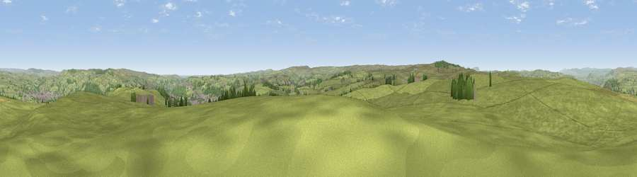

Steeton Moor
#14046 in England · top 19% of its area beats it · near LaycockThe view, rendered

A 360° render of this exact spot computed from the terrain model, tree cover and land cover — summer colours, afternoon light, calibrated against photographs of famous viewpoints. Real trees, hedges and buildings will differ in detail.
The panorama
Grey silhouette: terrain skyline in each direction (720 bearings, Earth curvature and refraction included). Dashed green: skyline with trees (+15 m) and buildings (+8 m) as obstacles. Blue strip: how far the ground is visible on each bearing.
Where the view opens
Wedge length = distance to the farthest visible ground on that bearing (vegetation-aware). Rings at 10, 25 and 50 km.
What fills the view
90% grassland · 7% woodland · 3% built-up
Angular shares of the visible panorama (visual magnitude), not map area. Landscape diversity 0.17 (0–1 Shannon).
Key numbers
More beautiful places nearby
The staircase of upgrades: each row has a higher view potential than everything closer. Driving times are estimates from straight-line distance, calibrated against real road routing — check an actual route before setting out.
| Place | Direction | Drive | Score |
|---|---|---|---|
| Viewpoint near Laycock | ENE · 2 km | ~5 min | 59.3 |
| Viewpoint near Laycock | ENE · 2 km | ~5 min | 59.7 |
| Viewpoint near Sutton | WNW · 3 km | ~8 min | 63.5 |
| Viewpoint near Cowling | WNW · 4 km | ~9 min | 65.0 |
| Viewpoint near Riddlesden | ENE · 6 km | ~12 min | 67.5 |
| Viewpoint near Addingham | NE · 7 km | ~15 min | 68.9 |
| Viewpoint near Lothersdale | NW · 9 km | ~18 min | 70.5 |
| Lad Law (Boulsworth Hill) | SW · 11 km | ~21 min | 71.5 |
53.87263, -1.96688 · source: dobih hill · position refined by local search. Computed location — check access rights before visiting.